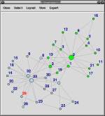
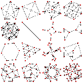
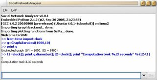
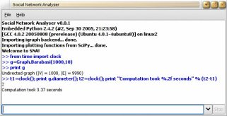

The igraph library |
|---|
|
|
This is another library for creating and manipulating graphs. There is simply no other graph library out there which can be handle graphs of the size the author is confronted with efficiently. Whenever possible igraph tries to be also user friendly and portable. igraph started as an additional package to the GNU R statistical environment, and still some functions which are hard to implement in C are available only in R (like interactive graphics). Most functions are however now written in C and they can be compiled without R as a separate library. Still the author highly recommends the R package version, as it is a sophisticated, well designed modern system. The advantage of the C version is that it is portable, can be used with other mathematical software (as soon as somebody writes the interfaces to it), and for large scale scientific computation in the Condor environment we are using here at KFKI. igraph also features a Python interface, and other interfaces can be added without too much pain.
The latest released version of the igraph library is @VERSION@. The source code can be obtained from here: igraph-@VERSION@.tar.gz. It was tested on various Linux flavours, SunOS 5.8, and Cygwin. You can also get the latest development version from http://cneurocvs.rmki.kfki.hu/arch/csardi@rmki.kfki.hu--2004-public, with the tla arch revision control system. The R source package version of the latest release is available here: igraph_@VERSION@.tar.gz. A binary R package for windows can be obtained from here: igraph_@VERSION@.zip.
The Python interface can be downloaded from its Python Cheese Shop page. Note that this is a standalone package and you don't need to download and install the igraph library at all. Igraph is documented in the igraph Reference Manual. This manual is for those who want to use the C library directly. You can download it as a HTML bundle, a PDF file, a GNU info document, or browse it online. The original XML DocBook format of the manual can be obtained by downloading the latest igraph development version from http://cneurocvs.rmki.kfki.hu/arch/csardi@rmki.kfki.hu--2004-public. There is also an igraph tutorial under development, you can read the current version online here. PDF and other versions are also planned. The R package documentation is included in the package but can also be browsed online here. It is available in PDF format as well. The Python package documentation is provided in the docstrings using Epytext markup, but it can also be browsed online here. It is available in PDF format as well. The first picture is a screenshot of the The second and third plots are examples from the paper T. M. J. Fruchterman and E. M. Reingold. Graph drawing by force-directed placement. Software - Practic and Experience, 21, 1129-1164, 1991. http://citeseer.ist.psu.edu/fruchterman91graph.html
The second was made with the Fruchterman-Reingold, the third with the Kamada-Kawai vertex placement algorithm. The fourth image is a screenshot of the Python interface.   

Click on the images to see the bigger picture. The first video shows how fast igraph can generate various random graphs, the second introduces some bits of the new attribute and vertex/edge sequence mechanism introduced in version 0.2. Both videos use the R interface of igraph.
For using the igraph C library the only requirement is a fairly recent C library. Python version at least python 2.4 is needed for the python interface. For compiling igraph from source you'll need a fairly modern C compiler and some standard unix tools: sed, touch, chmod, etc. GNU bison is also needed, at least version 1.35 or newer. There are two igraph mailing lists:
PajekPajek is an excellent network analysis and vizualization software writen for Windows (but it runs in Wine under Linux as well). See the Pajek homepage. It can handle quite large (millions of vertices) graphs smoothly. Its main drawbacks are that (1) it is interactive, (2) closed source, (3) hard to extend. UcinetUcinet is a collection of graph analysis software, it also includes Pajek. It's intended audience is social scientists, and cannot handle large graphs well. It can be used freely for 30 days and it is closed source. Homepage: http://www.analytictech.com/ucinet.htm. The Boost Graph LibraryThis is an impressive library written in C++ for manipulating graphs. It is quite fast, and can handle moderately large graphs. A good choice for anyone who likes programming in C++, but it also has interfaces from some higher level languages. See http://www.boost.org/libs/graph/doc/index.html. NetworkXNetworkX is another nice piece of software written in Python. See https://networkx.lanl.gov/. SNASNA (Social Network Analysis) is an extension package to the GNU R system. It is useful for small graphs only, as it uses adjacency matrices. See http://erzuli.ss.uci.edu/R.stuff/ for more. IGraph library. Copyright (C) 2003, 2004, 2005, 2006 Gabor Csardi <csardi@rmki.kfki.hu> MTA RMKI, Konkoly-Thege Miklos st. 29-33, Budapest 1121, Hungary This program is free software; you can redistribute it and/or modify it under the terms of the GNU General Public License as published by the Free Software Foundation; either version 2 of the License, or (at your option) any later version. This program is distributed in the hope that it will be useful, but WITHOUT ANY WARRANTY; without even the implied warranty of MERCHANTABILITY or FITNESS FOR A PARTICULAR PURPOSE. See the GNU General Public License for more details. You should have received a copy of the GNU General Public License along with this program; if not, write to the Free Software Foundation, Inc., 51 Franklin Street, Fifth Floor, Boston, MA 02110-1301 USA |


{kind=link}
{kind=link}
{kind=link}